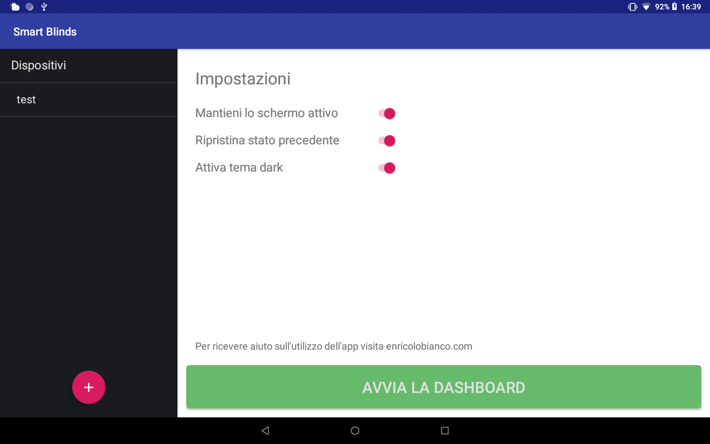

Automate blinds with Sonoff Dual
Part Three: Dashboard Configuration
Last edited: 01/09/2019
The Sonoff is an electrical device that uses high voltage. If you are unsure of the operation and connection of the Sonoff, ask an expert electrician for help. I take no responsibility for the installation of electrical materials and for the suggestions provided on this page.
Android App
Download the Android App Smart Blinds for Sonoff Dual only available for tablets.
This application implements the two main systems needed to control the Sonoffs:
- An MQTT broker that acts as a server and receives all messages from clients (Sonoff switches);
- A Dashboard that allows the user to interact with the Sonoffs to control the blinds.
The app is only available for tablets because the bigger screen allows for more devices being shown in the dashboard. Plus, the tablet can be wall mounted to resemble a realistic smart dashboard.
The tablet and the Sonoffs must be connected to the same WiFi network!
MQTT configuration on the Sonoff Dual
MQTT is a publish-subscribe messaging protocol which is widely used in the Internet of Things. If you want to learn more about it, look for MQTT on Google.
To prepare the Sonoff for the connection, go to its web page and navigate to Configuration, then MQTT Configuration.

- Host: Enter theip address of the tablet on which the app has been installed.
- Porta: Leave the default port 1883.
- Topic: Enter a string that will identify this particular Sonoff within the app.
WARNING: In order to work with the app, the Topic must contain lowercase letters only! Each Sonoff must have a different topic. - Full Topic: It is important that this field remains as it is by default.
Adding a new device in the app
First thing is to add all the Sonoff devices you wish to control. To start, simply click on the + button at the bottom left. This screen will appear:

- Name: Enter any name to identify the blind.
- MQTT Topic: Enter the string that was chosen in the previous step as Topic in Sonoff's MQTT Configuration.
- Type: The app supports two types of blinds: the rolling shutters with holes and the American style blinds. Choose the one that best fits your needs.
- Times: These are the opening and closing times of the blind. Animation helps to understand what each time refers to. Starting from left to right and from top to bottom the times are:
Rolling shutter with holes- From open to closed with visible holes (when the shutter touches the ground)
- Since it touches the ground to completely closed
- From completely closed to when it touches the ground (visible holes)
- From when it touches to the ground to completely open
American style blind (not visible in the image)- From completely open to completely closed
- From completely closed to completely open
Times are important to determine the position of the shutter. In fact, the app builds a shutter animation so that the user knows his current status simply by looking at the tablet.
Measure the times with a stopwatch then enter the values in the corresponding boxes. Approximate the time measured in excess. For example, if you measure 10.35 seconds, enter 11.
Starting the Dashboard
After adding all the devices (one at least) we will find ourselves with this screen:

Before starting the Dashboard we can choose some settings:
- Keep the screen active: Prevents the tablet from entering sleep mode.
- Restore the previous state: The position of the shutters is memorized in order to restore it when the app is closed and opened again.
- Enable dark theme: Change the colors of the Dashboard.

When the dashboard starts there is a short period of loading during which the tablet tries to establish the connection with the Sonoffs. In the image above the test device is connected. This can be seen by the color of the buttons.
The second device (entered for demonstration only) did not successfully connect and the buttons are gray until connection is made.
The configuration is finished. The app currently allows the addition of up to 11 devices. Probably this limit will be cut down with future updates.
Recommended scenario
I personally installed the application on a tablet and mounted the tablet to the wall.
To simulate a real dashboard I activated the screensaver from the Android settings. Here is a guide on how to activate the screensaver on Android devices.
In the application it is essential that the Keep the screen active setting is unchecked. The other two settings can be checked or not depending on your needs.
In this way we allow the tablet to activate the screensaver after a few seconds of inactivity. This way you can reactivate the tablet with just a single touch. Plus, the tablet will reactivate directly in the application.
I tried different combinations and I think this is the best so far.